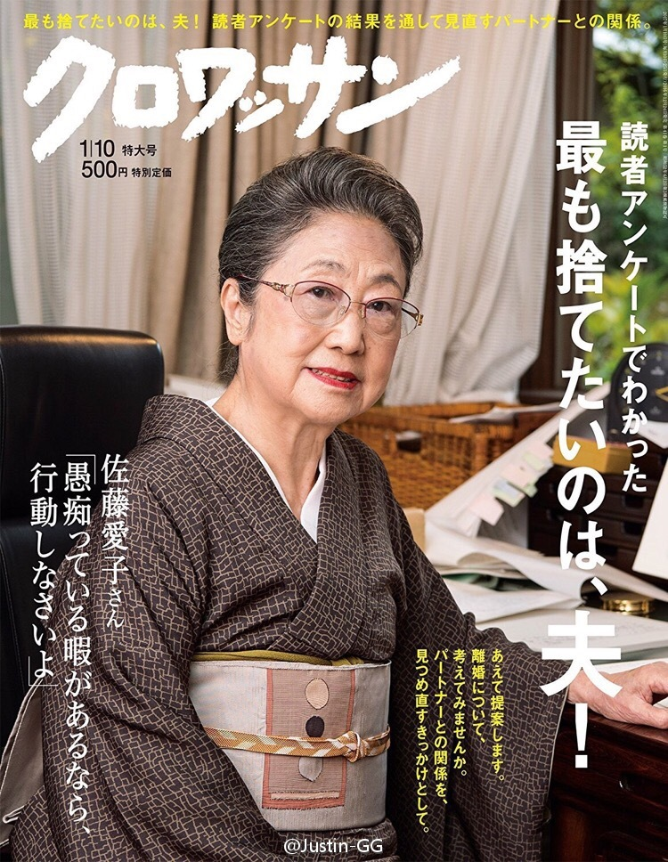

主要是不喜欢赔钱啊@挖龙脉的超级鹿鼎公:熊市耐得住性子拿的住现金的人有几个，俺关注的人中，也就@ETF拯救世界 @佐罗_厚恩投资 @天狼50陈浩 几个吧，还有3成现金，手上票平均红利超过5%，且现金流都是让俺满意满意的
老公：终于盼到这一天了 //@电疗哥-泥踩:丢掉老公，重燃性福！ //@庄雅婷: //@Justin-GG:翻译一下左下角补刀：有时间瞎叨逼你咋不赶紧动手！@Justin-GG:以提案各种家庭收纳技巧，以及提倡“断舍离”而深入主妇人心的杂志《croissant》发表了今年读者问卷调查结果————最想丢掉的是：老公 